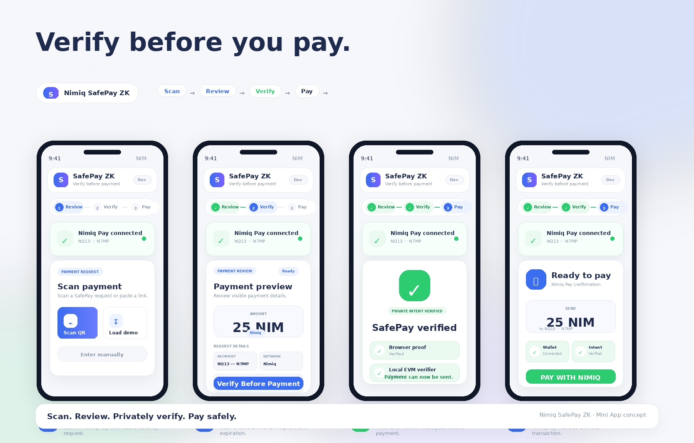

Verify before you pay.
SafePay ZK is a safer payment review layer for Nimiq Pay. Scan, review, privately verify, and only then send.

Review → Verify → Pay
SafePay ZK does not replace Nimiq Pay. It adds a verification layer before payment, helping users check a payment request before sending funds.
Safer payment review
Users review the amount, recipient, network, and expiration before continuing.
Private verification
The verification step checks whether the request matches an approved intent without exposing private intent data.
Nimiq Pay handles payment
Nimiq Pay remains responsible for wallet connection, confirmation, and transaction history.
Private verification before payment.
The payment itself can still happen through Nimiq Pay. SafePay ZK focuses on the moment before payment: helping users verify what they are about to send.